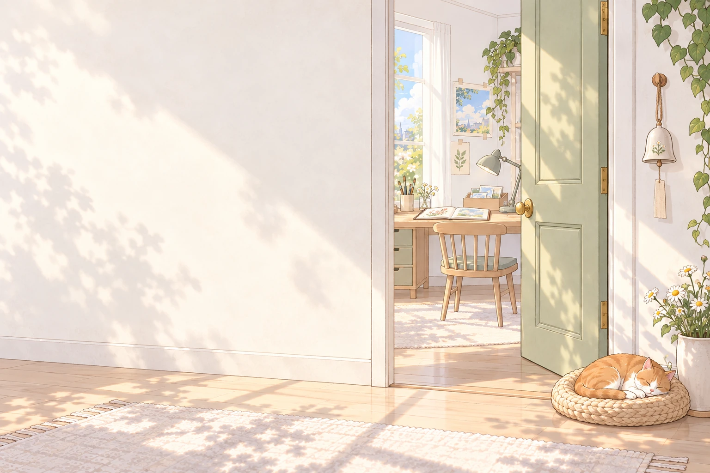

拿起与放下
手边的物件可拖到对应位置，也可先点物件，再点要使用的地方。装在别处的镜子、针和棉线，需要先取回来。
留一盏灯，给暂时迷路的时候
如果在某一处多停了一会儿，
这一页，也许刚好用得上。
27 处机关 · 道具去向 · 生日结尾 · 收藏与小记
与当前游戏同步

每一关先留一点思路，完整解法收在折页里。截图只用来认地方，不会替你操作游戏。这里不读取、修改或上传进度，可以放心和游戏分开开着。
解法中的次数都从这一关「重来」后的初样算起；已经改过许多次时，可以只重来当前机关。木盘接受不同有效走法，天平也能左右互换，不必照着唯一一条路线走。
手边的物件可拖到对应位置，也可先点物件，再点要使用的地方。装在别处的镜子、针和棉线，需要先取回来。
物件会留在打开的抽屉、片袋或盒底。再点一下，才算收进手边。收藏和线索会另有提示，也能在手账回看。
房间左右的箭头和「小屋里」可以换场景。电脑可用鼠标，手机和平板建议横屏；能拖动的机关也保留了轻点或键盘操作。
手册正在翻开……